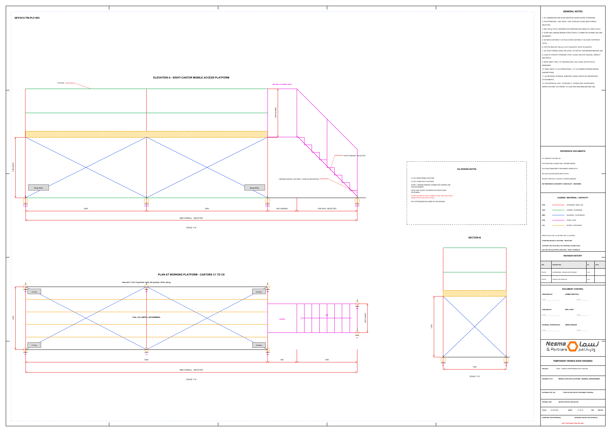
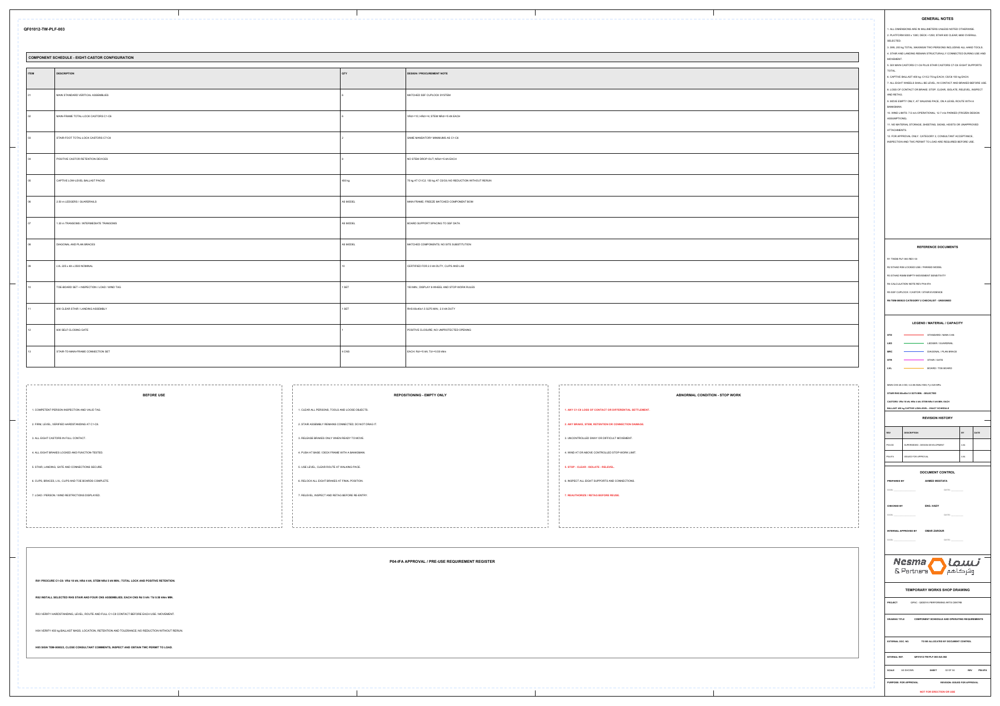

S.02 / Design package & shop drawings
Mobile access platform
A coordinated design package linking the analytical model, support conditions, material specifications, and construction drawings.
- MY ROLE
- Designer · Calculations & drawings
- DISCIPLINE
- Temporary works / Access
- PERIOD
- September 2026
- ISSUE STATUS
- Issued for approval · P04-IFA

The task
The platform geometry, integrated stair, wheel supports, ballast, and movement condition needed a consistent design basis across the models and drawings.
My contribution
I prepared the design calculations and the detailed drawing package. The selected R08 and R08M analyses address the defined in-use, parked, and empty-movement conditions, with the same assumptions carried into the documentation.
What I delivered
- Design basis and coordinated general arrangement drawings.
- Analysis models and member, support, and stability checks.
- Calculation note and component performance specifications.
- A recorded set of approval and use hold points.
The result
The drawings and calculation note were assembled as a controlled for-approval package, with the issue state and remaining release requirements stated explicitly.
Status: issued for approval, not for erection or use. The portfolio shows design and documentation work; it does not represent a signed construction release.
